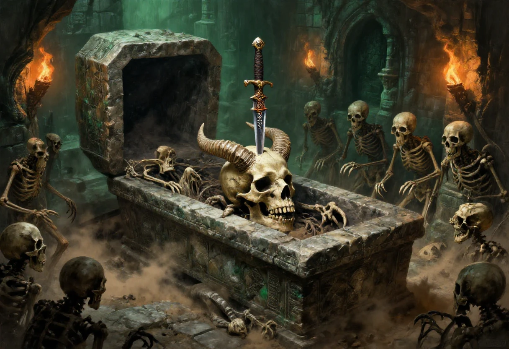
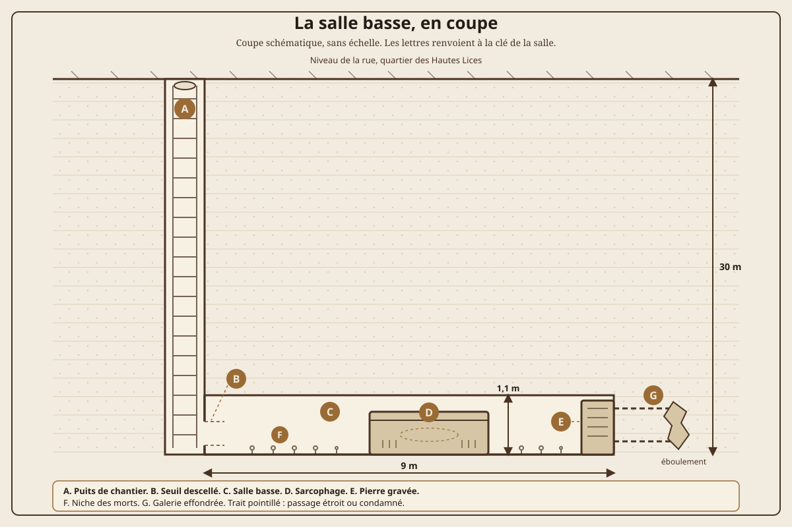
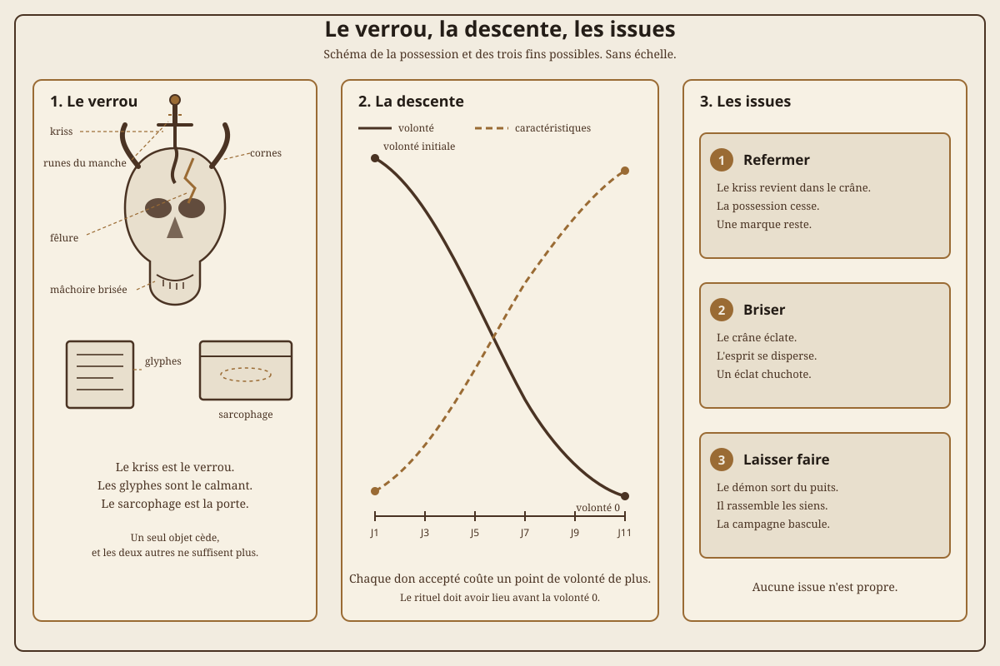

Voici le premier scénario complet de ce recueil. Je l'ai écrit vers 1999 pour une équipe de gouris, et je l'ai retrouvé dans mes archives sous la forme d'un synopsis d'un seul bloc, sans actes, sans dialogue et sans plan. Le fichier s'arrête au milieu d'une phrase, sur un « Ils feront » qui n'a jamais eu de suite. Je le reprends ici, je le découpe, je comble les trous et j'écris la rencontre finale. La note finale dit ce qui vient de 1999 et ce qui a été ajouté en 2026.
Deux avertissements avant de commencer. Le scénario est taillé pour une équipe exclusivement gouri, de préférence des jeunes rejetés par leurs parents ou par la société gourie. Il est difficile d'y survivre sans perdre un personnage, et la probabilité qu'il se déroule sans mort ni possession est minime. Ce n'est pas un défaut de conception, c'est le sujet : on y joue des voleurs qui creusent leur propre maison et qui trouvent sous leurs pieds quelque chose qu'ils n'auraient jamais dû réveiller.
| Rubrique | Valeurs |
|---|---|
| Titre | Le squelette enfoui d'Azefhfkrijiiir. |
| Source | Synopsis écrit vers 1999, retrouvé dans les archives, réorganisé et complété en 2026. |
| Type | Scénario complet. Creusement, découverte, possession, négociation, rituel. |
| Joueurs | Trois à cinq, plus le meneur. |
| Personnages | Gouris de seize à vingt-cinq ans, dont au moins un gouri taupe. Origine sociale -2 ou -3. |
| Règles | Nightprowler, version 1.x. La volonté facultative du chapitre VI est recommandée. |
| Durée | Deux séances longues ou trois séances courtes. Quatre heures en convention, en coupant les rêves. |
| Lieu | Samarande, quartier des Hautes Lices, trente mètres sous terre. |
| Ton | Claustrophobie, convoitise, possession. Les personnages creusent leur maison et trouvent une tombe. |
| Avertissements | Possession, perte de contrôle du corps, rêves imposés, mort de personnage, claustrophobie. |
| Matériel | Dés, plan de la salle, schéma de la possession, une fiche de comptes et un crayon. |
Il y a très longtemps, du temps des grandes invasions démoniaques, alors que Samarande ne faisait pas le cinquième de sa taille actuelle, un démon d'une puissance phénoménale terrorisa le continent connu. Il sema la souffrance comme une vague dans une mer déchaînée, une mer d'humains pour la plupart, une mer de gens faciles à influencer. Les armées humaines accumulèrent les échecs. Sans l'intervention du culte d'Arlam, sans celle des elfes et, on ne sait ni comment ni pourquoi, sans celle d'autres démons renégats, le monde aurait sombré dans une ère de décadence, de servitude et de souffrance.
Le démon fut vaincu, ou plutôt : on réussit à limiter presque totalement sa puissance, son aura et son influence. Pour cela, on sépara son squelette, réputé indestructible, en cinq parties : les jambes, les bras, la tête, le torse et le bassin. On plaça chaque partie sous haute surveillance, à bonne distance des autres. Selon certains vieux écrits, on enfouit le crâne à de nombreux mètres sous terre, dans un mausolée, à l'intérieur d'un cercueil de pierre massif marqué d'une des plus puissantes runes de protection de l'époque. Depuis, plusieurs parties du corps ont changé de propriétaires à plusieurs reprises. Mais sans la tête, le démon, suffisamment affaibli, devrait être totalement inoffensif.
Ce « devrait » est le cœur du scénario.
Le crâne est sous le quartier des Hautes Lices, à une trentaine de mètres de profondeur, dans une salle basse d'un mètre à peine. La salle contient une dizaine de squelettes poussiéreux et difformes : certains ont des griffes, d'autres des parties qui ressemblent à une anatomie animale. Au milieu trône un sarcophage de granit massif, assez grand pour un corps humain de deux bons mètres. Contre un mur, une grosse pierre porte un symbole bizarre, plus simple que ceux du sarcophage. Aucun personnage ne peut déchiffrer ces signes : ils datent d'une époque très reculée.
Ces sigles sont des glyphes de protection et d'affaiblissement d'une aura démoniaque. Sous la grosse pierre, il y a quelques objets maudits. Le meneur choisit leur forme et leur nature, ou pioche dans la table plus bas. Dans le sarcophage, une tête de squelette au visage marqué par une mâchoire puissante, déformée et brisée par endroits. Le crâne est couvert de petites excroissances osseuses pointues, émoussées par le temps, et deux grandes cornes tortueuses semblent faire partie intégrante du haut de la boîte crânienne. Un kriss couvert de runes est planté au milieu du front. Son manche porte des pierres d'une beauté et d'une pureté qui miroitent une puissance très séduisante.
Le kriss est le verrou. Les runes du manche maintiennent l'esprit du démon enfermé dans la félure du crâne. Les glyphes de la salle affaiblissent son aura. Le sarcophage n'est pas un tombeau, c'est une cage dont la serrure a été enfoncée dans la tête du prisonnier.
Le meneur doit savoir, avant la première séance, ce qui arrive si le kriss sort, si les glyphes sont brisés ou si le couvercle reste ouvert. Les pages qui suivent donnent un ordre de découverte, pas un mode d'emploi de la salle : chaque objet peut être détruit par un joueur qui ne comprend pas ce qu'il tient.
Les personnages sont de jeunes gouris réunis depuis peu devant l'adversité et la haine de leurs confrères. Ils ont décidé de former un groupe uni pour la vie, de se constituer comme frères et sœurs, par efficacité, solidarité, entraide et partage du travail. Il est important que la bande compte un gouri taupe dans ses rangs : sans lui, le chantier n'avance pas.
Ils cherchent un logis sûr et bien placé depuis plusieurs jours. Sans succès. Ils décident alors de se construire leur propre galerie à une trentaine de mètres sous le quartier des Hautes Lices. L'endroit est idéal : Samarande est déjà un labyrinthe, les sorties vers la surface sont proches sans être les plus connues des humains et des félis, et le voisinage immédiat n'est pas fréquentable, ce qui écarte les curieux. Après avoir référé au poste sud de gestion des galeries de profondeur 3, ils se mettent à creuser. Surtout le ou les gouris taupes, pendant que les autres évacuent la terre et montent la garde.
Puis ils tombent sur une pierre. Puis deux. Puis une façade de mur.
Le chantier dure huit nuits. La terre est plus lourde que prévu, plus grasse, et à partir de la cinquième nuit elle est tiède. Un gouri taupe sait que la terre n'est pas tiède à cette profondeur. À la septième nuit, un des creuseurs entend un craquement sec, comme une racine qui casse, et le mur apparaît. Personne ne propose d'arrêter.
C'est ici que le meneur passe la main. Un mur à plus de trente mètres sous terre, dans un chantier qu'ils ont choisi pour son calme, ne peut pas rester sans explication. La curiosité fera le reste, et l'endroit leur semble de toute façon trop bien placé pour être abandonné. Les joueurs vont déblayer, desceller une pierre, puis deux, puis un pan entier. Derrière, une odeur très forte de renfermé, âcre et suffocante. Sans éclairage, on n'y voit goutte. Il n'y a aucun support pour une torche.
La salle est basse, un mètre sous plafond. En creusant un peu le sol pour gagner un mètre de hauteur, elle ferait un excellent logis, avec des murs et un toit visiblement solides. Le seul détail embêtant, c'est ce qu'elle contient déjà.
Le mur n'est pas un mur de cave. Les pierres sont taillées, ajustées sans mortier, et la façade a été montée pour tenir un siècle, pas pour être vue. Derrière, le vide. Un personnage qui colle son oreille au joint entend un souffle très lent, régulier, qui n'est pas le courant d'air de la ville. Le meneur ne dit pas ce que c'est. Il laisse la table décider combien de temps elle écoute.
La première pierre tombe à la troisième nuit de déblaiement. Le trou est assez large pour passer un bras, puis une épaule, puis un corps de gouri. L'air qui sort sent le fer, le vieux cuir et le sucre rance. Une torche tient trois minutes dans la salle avant de faiblir. Les personnages n'ont pas de support pour la fixer, et le premier qui entre doit tenir la lumière à la main, ce qui lui laisse un bras de moins.
La description doit être faite dans l'ordre où les personnages la découvrent : d'abord l'odeur, puis le sol, puis les formes au fond, puis le sarcophage. Les squelettes difformes ne bougent pas. Ce sont des gardes morts depuis longtemps, ou des pillards qui ont trouvé la salle avant la bande et n'en sont jamais ressortis. Le meneur peut les laisser inertes : leur seule fonction est de dire aux joueurs qu'ils ne sont pas les premiers, et que les premiers n'ont pas eu de chance.

Le plan ci-dessus est une coupe, pas un relevé. Il donne au meneur les distances qui comptent quand une torche s'éteint, quand un personnage rampe et quand le sarcophage doit être porté. Les lettres renvoient à la clé de la salle.
| Zone | Lieu | Ce qu'on y trouve |
|---|---|---|
| A | Puits de chantier | Quatre-vingts centimètres de large, trente mètres de fond. Une corde, un seau, un guetteur. C'est le seul chemin vers la surface, et il ne tient pas deux personnes de front. |
| B | Seuil descellé | Deux mètres de maçonnerie sèche. Le linteau a été posé, pas scellé. Le passage le plus étroit fait quarante centimètres de haut : on y rampe, on n'y marche pas. |
| C | Salle basse | Neuf mètres sur six, plafond à un mètre dix. Le sol est de terre battue. Aucun support de torche. On y tient assis, pas debout. |
| D | Sarcophage | Granit, deux mètres quarante de long, quatre-vingt-dix centimètres de large, quatre-vingts centimètres de haut. Le couvercle pivote sur un axe de pierre. Des runes couvrent le couvercle et les flancs. |
| E | Pierre gravée | Un mètre de haut, soixante centimètres d'épaisseur, adossée au mur nord. La cache est creusée dessous. Le froid descend quand on la touche. |
| F | Niche des morts | Une dizaine de squelettes, des outils de maçon, des marques de griffes sur la pierre. L'un des morts est un enfant. Le meneur peut en faire les ouvriers du mausolée, murés pour garder le secret. |
| G | Galerie effondrée | Douze mètres vers l'ouest, bloquée par un éboulement. Un courant d'air passe encore. Les Veilleurs la connaissent et peuvent la rouvrir en une nuit. |
La grosse pierre gravée est le second pôle de la salle. Un personnage qui la touche sent le froid, puis une résistance, comme si la pierre pesait plus lourd que sa taille ne le laisse croire. Sous la pierre, les objets maudits attendent. Ils ne sont pas nécessaires au rituel, mais ils donnent aux joueurs quelque chose à faire de leurs mains pendant que le meneur prépare la suite.
| Objet | Ce qu'il fait, et ce qu'il coûte |
|---|---|
| Un anneau de fer | Il rend la main sûre : +2 aux tests de crochetage. Il ne se retire plus au bout de trois jours, et la main qui le porte se refroidit. |
| Une lampe de bronze | Elle éclaire sans huile et sans flamme. Chaque nuit passée allumée coûte un point de volonté au porteur. |
| Un miroir fêlé | Il montre la pièce telle qu'elle était au temps du mausolée. On y voit les gardes, et l'on finit par y voir le démon regarder de l'autre côté. |
| Une clé sans serrure | Elle ouvre une porte qui n'existe pas encore. Le meneur choisit laquelle, et le jour où elle apparaîtra. |
| Un dé de pierre | Il tombe toujours sur le résultat que le joueur espérait. Le meneur note chaque triche, et la dette se paie en une seule fois. |
| Une bourse vide | Elle contient toujours une pièce quand on la secoue. La pièce vient de la bourse d'un autre personnage, qui ne s'en aperçoit qu'au moment de payer. |
Le sarcophage est le point de bascule. Son couvercle est un bloc colossal, mais il pivote : les bâtisseurs n'ont pas scellé la tombe, ils l'ont fermée. Quand les personnages l'ouvrent, une odeur encore plus âcre s'échappe, et les joueurs doivent comprendre qu'ils viennent de faire une bêtise. C'est le moment de décrire le crâne en détail, les cornes, la mâchoire brisée, et le kriss planté dans le front.
La salle n'est pas seulement basse : elle est sèche, et le froid y descend dès qu'on cesse de bouger. Un personnage qui y passe plus d'une heure sans lumière perd un point de fatigue. Au bout de trois heures, il doit réussir un jet de volonté difficulté 5 ou dormir mal, avec les rêves de l'acte IV. Le meneur note le nom de celui qui craque le premier. C'est souvent celui qui tient la torche.
Le kriss est splendide. C'est le genre d'objet pour lequel un voleur oublie la prudence, et le scénario repose entièrement sur cette tentation. Si un personnage retire la dague du crâne fêlé, une fumée d'une grande noirceur s'échappe de la félure et remonte vers sa tête. Sauf jet de volonté difficulté 8, il tombe dans le coma pour quelques minutes. La fumée s'échappe vite et n'éveille probablement pas les soupçons des autres, sauf jet de repérage réussi. De toute manière, qu'est-ce que cela change maintenant.
Le meneur ne demande pas qui touche le kriss. Il demande qui le regarde le plus longtemps. La dague appelle le personnage qui a le plus à gagner et le moins à perdre, et elle n'a pas besoin de mots pour le faire. Si personne ne cède dans la première heure, le personnage le plus faible de volonté rêve de la dague cette nuit, et se réveille avec la main déjà tendue. Le premier contact ne se joue pas à la table, il se joue dans la tête du joueur.
Le personnage se réveille avec un mal de tête certain et sans souvenir d'un rêve quelconque. Seulement une vague sensation très désagréable de diminution de conscience. Il est possédé par l'esprit, encore très faible, d'Azefhfkrijiiir. Pour l'instant, rien de particulier ne se passe, si ce n'est que toutes ses caractéristiques sont réduites de 10, sauf l'apparence et la volonté. Il ne ressent pas sa possession. Il se sent très faible.
Si le jet de volonté est réussi, le personnage ne tombe pas dans le coma. Il se sent seulement traversé par un courant froid, et il se croit indemne. C'est le pire résultat possible : le démon est installé, et il a eu le temps de lire dans le personnage avant que celui-ci ne reprenne ses esprits. Le meneur note le nom, et ne dit rien.
Les autres personnages qui touchent le kriss se brûlent : une chaleur de froideur démoniaque, comme disent les vieux textes. S'ils insistent, le haut du membre qui tient la dague se déforme irrémédiablement jusqu'à la détérioration. Le kriss ne se range pas dans un sac. Il ne se donne pas. Il ne se perd pas non plus : il revient toujours à portée de main de celui qui l'a volé.
| Jour | Caractéristiques | Volonté | Ce que voit la table |
|---|---|---|---|
| Jour 1 | Toutes à -10, sauf apparence et volonté | Inchangée | Le personnage est épuisé, maladroit, incapable de courir longtemps. |
| Jour 2 | +1 par caractéristique | Inchangée | Il va mieux, et les autres commencent à trouver cela suspect. |
| Jour 3 | +1 par caractéristique | Inchangée | Il parle plus vite, mange peu, dort mal. |
| Jour 4 et suivants | +1 par caractéristique | -1 par jour au-delà du niveau initial | Le démon s'installe. À volonté 0, la possession est totale et irrémédiable. |
Le tableau précédent est celui du meneur. Les autres joueurs, eux, ne voient que des signes. Le meneur peut les décrire sans chiffres, et il ne les donne pas tous le même jour.
| Jour | Ce que les autres remarquent | Difficulté de repérage |
|---|---|---|
| Jour 1 | Le possédé est pâle, se plaint du froid, mange peu. On met cela sur le coma et sur la peur. | 7 |
| Jour 2 | Il se tient mieux, parle plus vite, et ses mains sont froides même près du feu. Une petite blessure se referme trop vite. | 6 |
| Jour 3 | Il dort mal, se réveille avant les autres, et répond parfois à une voix que personne n'entend. Les animaux de la surface le fuient. | 5 |
| Jour 4 et suivants | Son ombre est en retard, ses dents semblent plus longues, et il a toujours faim. Il commence à parler de la salle comme d'une maison. | 4 |
| Volonté 0 | Ce n'est plus lui. Le visage est le sien, mais le regard ne cligne plus. Aucun jet ne permet de le nier. | Aucune |
La volonté perdue ne revient pas toute seule. Une nuit de repos complet rend un point, à condition que le possédé n'ait pas utilisé la force du démon dans la journée. Un prêtre d'Arlam peut en rendre trois, mais le rituel coûte au prêtre et laisse une dette. Les Veilleurs savent stabiliser un porteur à un point par jour, pas plus, et ils le font sans dire pourquoi. Tant que le kriss est hors du crâne, le possédé ne remonte jamais au-dessus de sa volonté initiale.
Chaque fois que le possédé accepte un cadeau du démon, la volonté baisse d'un point de plus. Le joueur ne sait pas qu'il accepte. Le meneur note le cadeau, la circonstance et le prix. C'est cette dépense volontaire qui fait descendre le compte plus vite que le tableau, et c'est elle qui oblige la table à choisir avant la fin.
L'augmentation n'a pas de limite. Le personnage devient plus fort, plus rapide, plus habile, et chaque point gagné au-delà de son niveau initial se paie en volonté, au rythme du tableau. Le meneur tient ce compte à part, sur une feuille que le joueur ne voit pas. Le joueur sait seulement que son personnage se sent mieux. C'est le mensonge du scénario, et il fonctionne d'autant mieux que le personnage était faible au départ.
Ce que le démon veut, le meneur doit le savoir avant la première séance. Azefhfkrijiiir veut sortir de son crâne, puis réunir ses cinq parties, puis un corps qui marche à la surface. Il ne ment pas sur ses promesses : il offre la force, la santé et la peur qu'il inspire. Il ment seulement sur le prix. Chaque jour, il apprend du porteur une chose que le porteur ne savait pas qu'il savait : le nom de sa mère, la cachette de la bande, le chemin du poste sud. Le meneur note ces choses. Elles reviennent au moment où le personnage croit être seul.
La secte d'Azefhfkrijiiir existe encore, dispersée dans Samarande et dans les campagnes. Elle ne sait pas où est le crâne, mais elle a senti que la tombe a bougé. Les Veilleurs l'ont senti aussi, et c'est pour cela qu'ils sont descendus avec cinq gouris. Entre les deux, la bande est un outil, pas un camp.

La fiche de possession tient sur une page. Le meneur y note la volonté initiale, la volonté actuelle, chaque caractéristique gagnée, chaque cadeau accepté, chaque nom que le démon a appris et chaque marque visible. Il ne la montre pas. À la fin de chaque séance, il relit la fiche avant de préparer la suivante. C'est elle qui décide du rythme, pas le scénario.
Quoi que fassent les personnages pendant les deux jours qui suivent, chaque soir ils rêvent de la même scène. La première nuit, ils se sentent un peu mal, plus que d'habitude. La deuxième, ils se sentent davantage mal à l'aise dans leur peau et éprouvent une légère faiblesse. Autour d'eux, c'est le noir, le néant complet. La troisième nuit est identique, mais plus intense. La quatrième, ils se voient mutuellement, toute l'équipe réunie, un peu rassurée.
Puis une légère lueur apparaît au milieu du cercle qu'ils ont formé. Une lueur rassurante. Les nuits suivantes, la scène se répète avec une lueur chaque fois plus intense, plus rassurante, plus gargarisante. Les personnages éprouvent un regain de puissance très appréciable, bien qu'illusoire, de jour en jour.
Une belle nuit, la lueur fait place à un squelette qu'on dirait presque humain. Pour qu'elle soit si rassurante et bénéfique, elle ne peut pas être démoniaque. Pourtant, à mesure que la sensation de bien-être des personnages grandit, le squelette se transforme en une forme difforme dont ils finissent par reconnaître le crâne : celui avec le kriss planté au beau milieu du front.
Des gouris ont peu de chances d'être proches du culte d'Arlam, et ce squelette est vraiment entraînant, agréable à côtoyer. En fait, sans s'en apercevoir, les personnages se sentent chaque jour un peu mieux, mais ce n'est qu'une illusion. Ceux qui ne sont pas possédés sont plus lents et plus faibles : à partir de la cinquième nuit, -1 par caractéristique, sauf l'apparence, de manière temporaire, chaque nuit, sauf jet de volonté réussi. Le meneur comprendra plus tard pourquoi le mot temporaire est entre guillemets.
Puis vient le jour où les personnages, et particulièrement le possédé, rêvent du squelette brisé en cinq parties : les jambes, les bras, la tête, le torse et le bassin. Dès lors, la sensation de plaisir disparaît totalement. Chaque nuit, la scène se renouvelle. Le démon ne promet plus, il réclame.
Le tableau suivant n'est pas une obligation de calendrier. C'est une progression, et le meneur peut la tenir sur cinq nuits ou sur douze. Ce qui compte, c'est l'ordre : d'abord le vide, puis le groupe, puis la lumière, puis le squelette, puis la demande. Les effets ci-dessous concernent les personnages qui ne sont pas possédés. Le possédé suit le calendrier de l'acte III, et son propre rêve.
| Nuit | Ce que voient les personnages | Effet mécanique |
|---|---|---|
| 1 à 3 | Le noir, le froid, une odeur de terre et de sueur. Chacun est seul, même quand il dort à côté des autres. | Jet de volonté difficulté 4. En cas d'échec, un point de fatigue au réveil. |
| 4 | Le cercle se forme. Les visages apparaissent, rassurants. Personne ne parle, mais tout le monde se sent attendu. | Aucun jet. Le meneur décrit le soulagement. |
| 5 et 6 | Une lueur au centre du cercle. Elle grandit, chaude, agréable, et chaque personnage se sent plus fort à son contact. | Jet de volonté difficulté 5. En cas d'échec, -1 par caractéristique (sauf apparence), temporaire. |
| 7 | La lueur devient un squelette presque humain. Il tend la main. On a envie de la prendre. | Jet de volonté difficulté 6. En cas d'échec, -1 par caractéristique (sauf apparence), temporaire, et le personnage se réveille avec les mains sales. |
| 8 | Le squelette se déforme. Les cornes poussent, la mâchoire casse, le kriss apparaît dans le front. Le personnage reconnaît le crâne de la salle. | Jet de volonté difficulté 7. En cas d'échec, -1 par caractéristique (sauf apparence), temporaire, et le personnage ne peut pas parler de ses rêves le lendemain. |
| 9 et suivantes | Le squelette est brisé en cinq. Les morceaux sont posés autour du cercle. Le démon ne promet plus : il nomme les morceaux, un par un, et il attend. | Jet de volonté difficulté 8 chaque nuit. En cas d'échec, -1 par caractéristique (sauf apparence), temporaire, et -1 permanent à la volonté. |
Le possédé ne fait pas le même rêve. Il se voit de l'extérieur, debout dans le cercle, et le squelette porte son visage. Les autres le voient à sa place, et ils n'osent rien dire au réveil. Le meneur décrit cette scène une seule fois, à la nuit où le personnage perd son premier point de volonté au-delà de son score initial. C'est le moment où le joueur comprend que le rêve ne parle pas de quelqu'un d'autre.
Un personnage qui refuse de dormir ne gagne rien. Le rêve le rattrape à la première heure de faiblesse, et il est deux fois plus long. Un personnage qui est réveillé au milieu de la nuit entend la voix continuer dans la pièce, très bas, comme si quelqu'un lisait la suite à côté de lui. Les autres ne l'entendent pas. Le meneur ne confirme jamais qu'il y a quelqu'un.
Le matin, les personnages se réveillent avec les mains froides et de la terre sous les ongles. L'un d'eux a marché pendant son sommeil. Le meneur choisit celui qui a le moins dormi, ou celui qui a le plus à perdre. Il ne dit pas où il est allé. Il dit seulement que la poussière de la salle est encore sur ses pieds.
Entre-temps, parmi les dernières journées de bien-être avant les rêves répétés du démembrement, les personnages rencontrent un beau matin deux humains à la mine blafarde, accompagnés d'un groupe de cinq gouris. Le fichier d'origine s'arrête ici, sur un « Ils feront » sans suite. Voici ce qu'ils font, et pourquoi ils sont là.
Les deux humains sont des Veilleurs, une confrérie laïque issue des gardiens du culte d'Arlam. Ils ne sont pas prêtres et ne prétendent pas l'être. Ils surveillent les cinq sépultures du démon depuis des générations, et la rune de la salle basse vient de pâlir. Ils sont descendus avec cinq gouris recrutés dans les Hautes Lices, les mêmes que la bande a croisés avant son chantier, ou leurs cousins. Les Veilleurs savent que le kriss a été retiré. Ils savent aussi qu'ils ne peuvent pas le reprendre de force : la dague brûle quiconque n'est pas possédé.
Les deux humains ne sont pas armés comme des soldats. Ils portent des manteaux de laine grise, des bottes de terrassier et des lampes à huile fermées. L'homme s'appelle Albéric de Vaux. Il a une soixantaine d'années, une voix douce, des yeux blancs de cataracte et un registre de cuir sous le bras. Il ne regarde personne directement, et il n'a pas besoin de le faire. La femme s'appelle Mathilde Cendre. Elle a quarante ans, les mains larges, une cicatrice au menton et un marteau de maçon passé à la ceinture. C'est elle qui parle aux gouris, et c'est elle qui porte les outils.
| PNJ | Profil | Valeurs |
|---|---|---|
| Albéric de Vaux | Veilleur, soixante ans, grand, sec, yeux blancs, voix douce. Ne se bat pas. Connaît les glyphes, les cinq sépultures et le rituel. | Adr 9, Agi 7, Bea 8, Cou 13, Élo 15, End 9, For 7, Mém 17, Mor 4, Per 8, Rap 7. Fat 8, San 12, Ini 2, AC 9. Compétences : Connaissance des glyphes 18, Théologie 15, Loi 12, Marchandage 13. |
| Mathilde Cendre | Veilleuse, quarante ans, large, cicatrice au menton. Parle aux gouris, manie le marteau et la lanterne. Ne recule pas. | Adr 13, Agi 11, Bea 9, Cou 15, Élo 12, End 14, For 15, Mém 12, Mor 2, Per 13, Rap 11. Fat 15, San 17, Ini 3, AC marteau 14. Compétences : Maçonnerie 16, Escalade 13, Intimidation 13, Premiers secours 11. |
Les cinq gouris ne sont pas des mercenaires. Ce sont des gens des Hautes Lices que les Veilleurs ont nourris, logés et endettés. La table ci-dessous leur donne un nom, un lien et une raison de ne pas mourir pour des humains.
| Nom | Profil | Ce qu'il veut | Ce qu'il cache |
|---|---|---|---|
| Brissac | Gouri rat, la quarantaine, chef de bande, deux doigts en moins à la main gauche. | Des papiers pour lui et les siens. | Il a déjà conduit une bande dans la salle, il y a six ans. Il n'en parle pas. |
| Nour | Gouri taupe, vingt-cinq ans, large, silencieux, connaît les galeries mieux que les Veilleurs. | Faire sortir sa sœur du quartier. | Il sait que la galerie G peut être rouverte, et il n'a pas dit comment. |
| Sifflet | Gouri mulot, dix-sept ans, maigre, rapide, parle tout le temps. | Une place dans la bande des personnages. | Il rapporte tout aux Veilleurs, par peur, pas par loyauté. |
| Vieille Orme | Gouri taupe, soixante ans, aveugle d'un œil, porte le sel et la cendre. | Mourir à la surface, pas sous terre. | Elle a déjà vu un rituel. Le porteur est mort, et elle ne sait pas pourquoi les Veilleurs l'ont laissée remonter. |
| P'tit Fer | Gouri rat, quatorze ans, petit, maigre, une marque de brûlure au poignet. | Manger à sa faim et dormir au sec. | Les Veilleurs l'ont marqué. Si le porteur meurt avant le rituel, c'est lui qui doit reprendre le kriss. |
Ils proposent un marché. La bande reçoit un vrai logis, des papiers, une place dans le monde de la surface, et les cinq gouris répondent de leur parole. En échange, elle rapporte le kriss et le crâne au mausolée, et elle aide à refermer la tombe. Le marché est honnête dans sa lettre. Les pages suivantes montrent ce qu'il cache.
Si les joueurs refusent, les cinq gouris ne les attaquent pas tout de suite. Ils les suivent, les observent, et attendent que la possession devienne visible. Un gouri possédé qui marche dans Samarande attire les ennuis assez vite pour que les Veilleurs n'aient pas besoin de se salir les mains.
Le marché est écrit dans le registre d'Albéric, en trois lignes. Les Veilleurs fournissent un logis déclaré, des papiers de travail et une place dans le monde de la surface. La bande rend le kriss, le crâne et les objets maudits, aide à refermer le sarcophage et ne parle à personne de la salle. Les cinq gouris répondent de la parole de la bande. La dernière clause est écrite plus petit : le porteur du kriss est celui qui a retiré la dague, et c'est lui qui le remettra. Albéric ne lit pas cette clause à voix haute. Il la montre du doigt.
Ce que les Veilleurs ne disent pas, c'est ce que le rituel fait au porteur. Le kriss doit être remis par une main vivante et consentante. Le consentement n'est pas une signature : c'est un abandon. Le porteur doit accepter de perdre ce que le démon lui a donné, et le démon ne rend pas sans prendre. Les Veilleurs ont fait le rituel quatre fois en deux siècles. Trois porteurs sont morts dans la salle. Le quatrième a survécu, et il n'a plus jamais dormi plus de deux heures d'affilée. Mathilde Cendre est la petite-fille du quatrième.
Le plan de repli est simple, et il est mauvais. Si la bande refuse, les Veilleurs remontent, scellent le puits et attendent. Ils ont de l'eau, du sel, de la cendre et cinq gouris. Ils savent que la possession finira par faire sortir le porteur, ou par le tuer. Si le porteur atteint volonté 0 avant qu'ils ne descendent, ils font sauter la galerie G et murent la salle avec la bande dedans. Albéric appelle cela « refermer la tombe ». Mathilde appelle cela « nettoyer ».
Ce que les Veilleurs savent du temps : la rune de la salle a pâli il y a neuf jours, le kriss a bougé dans les trois derniers jours, et la secte a envoyé deux éclaireurs dans les Hautes Lices. Ils ne savent pas où sont les éclaireurs. Ils savent qu'ils cherchent la même chose qu'eux, et qu'ils n'ont pas besoin de la bande vivante.
La scène finale se joue dans la salle basse, ou dans un mausolée de surface si le meneur préfère déplacer le rituel. Les Veilleurs tracent un cercle de sel et de cendre, posent le crâne au centre et demandent le kriss. Le possédé doit le remettre lui-même dans la félure. Pendant ce temps, les autres personnages tiennent les cinq gouris à distance, ou les convainquent de changer de camp, ou les combattent.
Le rituel se joue en six étapes. Le meneur les annonce dans l'ordre, et il laisse la table interrompre entre deux. Une étape interrompue n'est pas perdue : elle est seulement plus difficile à reprendre.
| Étape | Ce qu'il faut faire | Jet, durée, incident |
|---|---|---|
| 1. Le cercle | Tracer un cercle de sel et de cendre de trois mètres de diamètre autour du sarcophage. | Un tour complet. Difficulté 5 si les personnages le font seuls. Les Veilleurs le réussissent automatiquement, mais ils demandent à la bande de tenir les lampes. |
| 2. Le crâne | Poser le crâne au centre, face vers le haut, et placer le kriss en travers de la mâchoire. | Un tour. Le crâne est lourd, et il est encore chaud. Un personnage qui le porte sent le démon essayer de parler. |
| 3. Les glyphes | Lire à voix haute les glyphes de la pierre gravée, dans l'ordre où ils sont gravés. | Jet de mémoire ou d'éloquence difficulté 8. Albéric a une transcription incomplète : il manque les trois derniers signes. Un échec inverse deux glyphes et affaiblit le cercle. |
| 4. Le kriss | Le possédé remet lui-même la dague dans la félure du crâne. | Jet de volonté difficulté 8, avec la volonté actuelle du possédé. En cas d'échec, le démon prend le corps pour 1d3 tours et attaque le cercle. |
| 5. Le couvercle | Refermer le sarcophage et remettre la pierre gravée en place. | Deux personnages, force 12, deux tours. Chaque tour passé attire un des cinq gouris ou un éclaireur de la secte. |
| 6. Le scellement | Reboucher le seuil, puis la galerie G, et remonter le puits. | Une heure. Le bruit attire tout ce qui reste dans les galeries. Les Veilleurs offrent de faire sauter la galerie, mais il faut quelqu'un pour poser la charge. |
Trois issues sont possibles, et aucune n'est propre. Le meneur choisit celle qui sert la suite de sa campagne, pas celle qui récompense les joueurs.
| Issue | Ce qu'il faut | Conséquence |
|---|---|---|
| Refermer la tombe | Le possédé remet le kriss dans le crâne, un autre personnage récite les glyphes, les Veilleurs referment le sarcophage. | La possession cesse. Le possédé perd définitivement les points gagnés au-delà de ses caractéristiques initiales, et garde une marque : une corne minuscule sous les cheveux, un froid dans la main, un rêve qui revient chaque hiver. |
| Briser le crâne | Un personnage frappe le crâne avec une arme lourde pendant que le kriss est retiré. Le crâne se brise, l'esprit se disperse. | Le démon perd son ancrage, mais un éclat s'enfonce dans la chair du personnage qui a frappé. Il ne possède pas, il chuchote. C'est l'accroche du chapitre IX. |
| Laisser faire | Personne n'intervient, ou le possédé atteint volonté 0 avant le rituel. | Azefhfkrijiiir se réveille dans un corps de gouri, faible mais libre. Il quitte la salle, rassemble les siens et marche vers le camp barbare du prince démon. C'est l'accroche du chapitre XII. |
Le rituel n'est pas une scène statique. Le meneur compte les tours à voix haute, sans expliquer ce qui vient. Chaque tour, quelque chose se dégrade.
| Tour | Ce qui se passe |
|---|---|
| 1 | Les lampes baissent. Le sel du cercle se soulève comme si on soufflait dessus. |
| 2 | Le crâne claque des dents. Personne ne l'a touché. |
| 3 | Les glyphes de la pierre deviennent tièdes. Un personnage qui les lit saigne du nez. |
| 4 | Le possédé entend sa propre voix lui dire d'arrêter. Les autres entendent un chuchotement dans le puits. |
| 5 | Un des cinq gouris avance d'un pas, puis s'arrête. Mathilde lève son marteau. |
| 6 | La galerie G craque. De la poussière tombe du plafond. Le passage vers la surface paraît plus loin. |
| 7 | Le démon parle par la bouche du possédé, une seule phrase, et il s'adresse à chaque personnage par son nom. |
| 8 | Le cercle tient ou il cède. Si personne n'a remis le kriss, la salle commence à se refermer. |
Les issues secondaires existent pour les tables qui n'arrivent pas à l'une des trois fins propres. Elles ne sont pas des punitions : ce sont des prolongements.
| Issue secondaire | Comment y arriver | Ce qui reste |
|---|---|---|
| Le crâne sort | Le kriss est remis, mais un personnage emporte le crâne hors de la salle avant le scellement. | Le démon est affaibli, pas enfermé. Il parle dans les rêves de la bande et promet un jour meilleur. Le porteur garde un point de volonté en moins. |
| Le kriss reste | Le crâne est brisé, mais la dague n'est pas remise dans la félure. | L'esprit se disperse dans les cinq gouris. Chacun d'eux porte un fragment. La bande doit les retrouver avant qu'ils ne quittent Samarande. |
| Le meurtre | Le possédé est tué avant le rituel. | L'esprit saute dans le meurtrier. Le kriss tombe, et les Veilleurs considèrent la bande comme compromise. La possession recommence au jour 1. |
| Le cercle brisé | Le rituel est interrompu, le sel dispersé, ou le possédé refuse au dernier moment. | Le porteur perd 1d3 points de volonté, la salle commence à s'effondrer, et la bande doit choisir entre fuir et recommencer. |
| Le pacte | La bande aide le démon au lieu de le refermer. | Le démon tient sa promesse : il donne à chacun ce qu'il veut. Il prend ensuite ce qu'il veut, et il ne demande plus. |
Après le rituel, le meneur lance un dé pour chaque personnage qui a touché le kriss ou le crâne. Le résultat dit ce qui reste. Un 1 laisse une trace visible. Un 2 ou un 3 laisse quelque chose que le personnage sent, et que les autres finiront par remarquer. Un 4 ou un 5 ne laisse rien sur la peau, mais une habitude ou un reflet qui ne suit pas. Un 6 ne laisse rien, sinon un souvenir qui n'appartient pas au personnage.
| d6 | Ce qui reste |
|---|---|
| 1 | Une corne minuscule sous les cheveux, à la naissance du front. |
| 2 | La main qui a tenu le kriss reste froide, même l'été. |
| 3 | Le même rêve revient chaque hiver, une nuit, sans prévenir. |
| 4 | Le personnage a faim de viande rouge, et il n'aime pas y penser. |
| 5 | Son reflet a une seconde de retard, ou une seconde d'avance. |
| 6 | Aucune marque. Le kriss se souvient pour lui. |
La table doit être préparée à l'avance. Si le possédé remet le kriss, le joueur perd son personnage tel qu'il le jouait, et le meneur doit lui laisser une scène pour dire au revoir. Si le crâne est brisé, le personnage qui frappe devient le porteur d'un éclat, et le joueur doit accepter de jouer avec une voix dans la tête. Si le démon sort, la campagne bascule : les personnages ne sont plus des voleurs qui creusent un logis, ils sont les témoins d'un réveil qu'ils ont provoqué.
La scène d'adieu mérite mieux qu'un jet de dés. Le meneur demande au joueur possédé ce que son personnage veut garder de lui : un geste, une phrase, un objet, le nom de quelqu'un. Il le fait dire à voix haute, devant les autres. Ensuite, il décrit ce qui reste dans la salle : la dague dans le crâne, le sel, les lampes, et la place vide dans le cercle. Si le personnage survit, la marque est jouée avant la fin de la séance, pas après.
Le scénario tient en trois séances courtes ou deux séances longues. La première va du chantier à l'ouverture du sarcophage. La deuxième couvre la possession, les rêves et l'arrivée des Veilleurs. La troisième est la rencontre finale. Si vous jouez en convention, coupez les rêves à la deuxième nuit et gardez la table des issues comme seule fin possible.
| Séance | Scènes | Objectif | Coupure |
|---|---|---|---|
| 1 | Le chantier, le mur, le seuil, la salle basse, l'ouverture du sarcophage. | Ouvrir la salle et comprendre que ce n'est pas un logis. | Le couvercle pivote. On ne voit pas encore le crâne. |
| 2 | Le kriss, le coma, les premiers rêves, l'arrivée des Veilleurs, le marché. | Faire comprendre que le personnage n'est plus seul dans sa tête. | Albéric referme son registre et demande une réponse. |
| 3 | Le rituel, les cinq gouris, la secte, le scellement. | Choisir ce qu'on referme, et ce qu'on emporte. | La dernière lampe remonte le puits. |
La possession se joue en secret, avec des notes et des sensations. Le meneur remet au joueur possédé une fiche de comptes qu'il ne montre pas aux autres, et il décrit les effets par des sensations, jamais par des chiffres : « tu te sens plus léger ce matin » vaut mieux que « tu as récupéré un point de force ». Pour les messages plus longs, il écrit sur un papier ce que le personnage ressent, ce qu'il entend et ce qu'il ne peut pas dire, puis il plie le papier et le passe au joueur. Les autres voient le papier, pas le contenu. Le joueur doit douter de ce qu'il ressent, pas calculer ce qu'il gagne.
Les cinq gouris des Veilleurs ne sont pas des figurants. Leurs noms, leurs dettes et leurs raisons de vivre sont dans la table de l'acte V. La meilleure scène du scénario n'est pas le combat final, c'est la négociation dans la salle basse, quand chaque camp découvre que l'autre n'a pas plus de choix que lui.
Si le joueur possédé est le gouri taupe, la bande perd son creuseur au pire moment. C'est une bonne chose : le meneur peut donner au démon la capacité de creuser, et la bande doit décider si elle accepte de laisser le possédé ouvrir le passage. Chaque mètre creusé coûte un point de volonté au porteur, et le joueur ne le sait pas.
Le meneur ne dit jamais « tu es possédé ». Il dit « tu te sens mieux », « tu entends une respiration dans le mur », « tu sais où se trouve la sortie sans l'avoir vue ». Il ne confirme pas non plus les soupçons des autres joueurs. Le doute est le seul terrain de la partie, et il se perd dès qu'on nomme la chose.
Enfin, prévenez la table avant de commencer. Le scénario contient une possession, des rêves imposés et la possibilité qu'un personnage perde le contrôle de son corps. Ce n'est pas une raison pour le retirer, c'est une raison pour demander l'accord de chacun avant la première séance. Un joueur qui n'a pas envie de jouer cela doit pouvoir le dire sans avoir à se justifier.
Scénario écrit vers 1999, conservé dans les archives sous le titre « Le squelette enfoui du prince démon Azefhfkrijiiir ». Le fichier d'origine est un synopsis d'un seul bloc, sans actes ni dialogue, qui s'arrête au milieu d'une phrase sur « Ils feront ». La présente version réorganise, complète et met en scène. Sont ajoutés pour cette édition : la fiche technique, le plan de la salle et sa clé, la table des objets maudits, le calendrier de la possession et les signes visibles, le tableau des rêves, l'identité et le marché des Veilleurs, les fiches des cinq gouris, la rencontre finale, le rituel pas à pas, l'horloge du rituel, les issues secondaires et les marques, ainsi que la section « Mener la table ». Les valeurs de possession, la difficulté 8 et le décompte des caractéristiques viennent du fichier d'origine. Aucun texte de tiers n'est reproduit. Version provisoire : la présente rédaction, y compris la rencontre finale, n'a pas été testée en table.